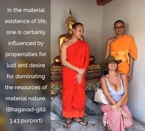
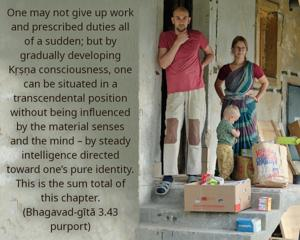

Thus knowing oneself to be transcendental to the material senses, mind and intelligence, O mighty-armed Arjuna, one should steady the mind by deliberate spiritual intelligence [Kṛṣṇa consciousness] and thus – by spiritual strength – conquer this insatiable enemy known as lust.


This Third Chapter of the Bhagavad-gītā is conclusively directive to Kṛṣṇa consciousness by knowing oneself as the eternal servitor of the Supreme Personality of Godhead, without considering impersonal voidness the ultimate end. In the material existence of life, one is certainly influenced by propensities for lust and desire for dominating the resources of material nature. Desire for overlording and for sense gratification is the greatest enemy of the conditioned soul; but by the strength of Kṛṣṇa consciousness, one can control the material senses, the mind and the intelligence. One may not give up work and prescribed duties all of a sudden; but by gradually developing Kṛṣṇa consciousness, one can be situated in a transcendental position without being influenced by the material senses and the mind – by steady intelligence directed toward one’s pure identity. This is the sum total of this chapter. In the immature stage of material existence, philosophical speculations and artificial attempts to control the senses by the so-called practice of yogic postures can never help a man toward spiritual life. He must be trained in Kṛṣṇa consciousness by higher intelligence.